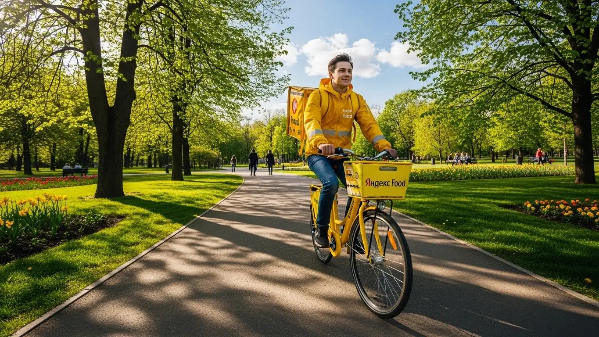
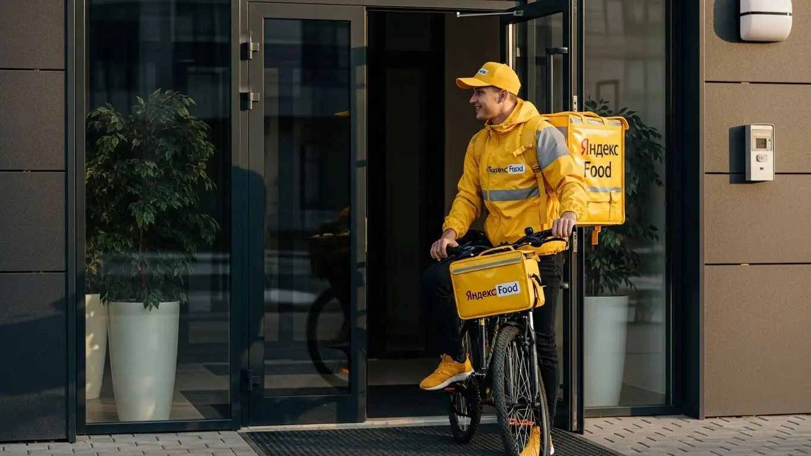

Доход курьера Яндекс Еды в Кургане в 2025-2026: обзор условий
- Работа курьером Яндекс Еды в Кургане: для кого эта вакансия и что вы получите
- Сколько вы будете зарабатывать курьером в Кургане: калькулятор дохода и разбор выплат
- Реальный заработок курьера в Кургане: смены и месячный доход
- График работы и форматы занятости
- Требования к кандидату и документы
- Самозанятость, налоги и юридическая чистота
- Пошаговое оформление и первый выход на линию в Кургане
- Пешком, на вело или на авто: что выгоднее в Кургане
- Районы, маршруты и «топовые» зоны заказов в Кургане
- Безопасность, страховка, штрафы и оплата простоя
- Плюсы и возможные минусы работы курьером в Кургане
- Реальные истории и отзывы курьеров из Кургана
- FAQ: Ответы на главные вопросы о работе курьером Яндекс Еды в Кургане
- Короткие ответы на главные вопросы
- Итоги и ваш следующий шаг
Все города
Здорово, земляк! Думаешь, как бы поднять денег, и глаз упал на вакансию «работа курьером Яндекс Еда в Кургане»? Идея хорошая, но давай сразу начистоту. Тебя ведь волнует не красивая реклама, а реальные вопросы: сколько останется в кармане после всех расходов, какие условия работы, не «убьешь» ли ты свою машину или велик по нашим дорогам и не будешь ли часами стоять в пробках где-нибудь на Гоголя, проклиная всё на свете? Если так, то ты по адресу. Это не очередная рекламная замануха, а реальный разбор полетов от того, кто знает эту кухню изнутри.
Поверь, просто скачать приложение и выйти на линию в Кургане — это прямой путь к разочарованию. Без понимания «внутрянки» ты рискуешь через месяц бросить всё, решив, что это невыгодно. Потому что на твой реальный доход влияет не только тариф. На него влияют расходы на бензин, налог самозанятого, твой рейтинг в системе, который решает всё, и, конечно, знание города. Большинство новичков в Кургане наступают на одни и те же грабли: катаются по пустым районам в непиковые часы или берут неудобные заказы, теряя время и деньги. Чтобы заранее изучить все нюансы, включая калькулятор дохода и форму для анкеты, загляни на страницу про работу курьером Яндекс Еда в Кургане — это поможет избежать типичных ошибок.
В этом гиде мы не будем лить воду. Мы честно посчитаем, сколько можно заработать пешком, на велосипеде и на авто именно в Кургане. Я покажу на карте, где самые «хлебные» районы и в какое время там лучше появляться. Разберём, как курганская зима и осенняя слякоть влияют на чек, за что реально прилетают штрафы и как их не словить. Сравним условия с другими доставками, которые есть у нас в городе, и посмотрим на реальные отзывы от местных ребят.
Меня зовут Алексей. Я сам не один год открутил баранку и с желтой сумкой побегал по Кургану, а сейчас держу небольшой таксопарк-партнёр и вижу всю картину с другой стороны. Так что никакой воды и рекламной шелухи. Только мясо, только хардкор по-кургански. В общем, пристегивайся, сейчас всё разложу по полочкам.
Чтобы тебе было проще сориентироваться, вот краткий навигатор по ключевым темам статьи.
Что ты точно узнаешь из этого разбора
В этой статье ты ТОЧНО узнаешь:
- Сколько реально можно заработать в Кургане за смену пешком, на велосипеде и на авто?
- В каких районах Кургана больше всего заказов и как не кататься впустую?
- Как погода, время суток и выбор слотов в «Яндекс Про» влияют на итоговый доход?
- За что на самом деле штрафуют в Яндекс Еде и как работает страховка на сменах?
- Что такое самозанятость, сложно ли её оформить и сколько придётся платить налогов?
- Как быстро можно начать работать и что для этого нужно из документов?
А если тебе некогда читать всю статью — переходи сразу к заключению, где ты найдёшь короткие ответы на все эти вопросы и указания, в каких разделах искать подробности.
А для начала — наглядная инфографика с основными цифрами по работе в Кургане.
Работа курьером в Кургане: ключевые цифры
Работа курьером Яндекс Еды в Кургане: для кого эта вакансия и что вы получите
Кому подойдёт эта работа в Кургане
Давай начистоту: эта работа не для всех, но для многих в Кургане она станет отличной подработкой. В первую очередь, это идеальный вариант для студентов. Пары закончились — вышел на пару часов в центре, заработал на свои расходы и ни от кого не зависишь. Свободный график полностью подстраиваешь под себя, никаких проблем с сессией.
Также это хороший старт для тех, у кого нет опыта. Требования в Яндекс Еде минимальны: не нужен диплом или резюме на пять страниц. Нужны только ноги, голова на плечах и смартфон. Эта вакансия — твой вариант, если ищешь дополнительный заработок к основной зарплате. Можно выходить на линию в выходные или после смены, чтобы выполнить несколько заказов и получить живые деньги.
Для водителей, у которых есть личный автомобиль, это возможность превратить его в инструмент для заработка, а не просто статью расходов на бензин и обслуживание. Главное, что объединяет всех — это потребность в гибком графике и быстрых деньгах.

Главные преимущества для жителей районов Заозерный, Северный, Рябково
Одно из главных удобств, которое многие недооценивают, — возможность работать прямо у себя в районе. Тебе не нужно тратить час-полтора на дорогу до «офиса». Живёшь, например, в Заозерном — включаешь приложение «Яндекс Про» и начинаешь брать заказы в своём же микрорайоне. То же самое касается жителей Северного или Рябково.
Это экономит не только время, но и деньги на проезд. Ты лучше знаешь свои кварталы, все короткие пути и дворы, где можно срезать. Это даёт тебе преимущество в скорости, а значит, ты сможешь выполнить больше заказов за то же время. По сути, ты работаешь на «домашнем поле», где всё знакомо и понятно, без лишнего стресса от поездок через весь Курган в час пик.
Краткое обещание по доходу и условиям
Если говорить о деньгах, то в Кургане цифры вполне реальные. При частичной занятости, работая по 3–4 часа в день, можно спокойно делать 1200–1800 рублей за смену. Если же рассматривать это как основную работу и выходить на линию на полный день (8–10 часов), то доход может доходить до 3500–4000 рублей. В месяц при полной занятости активные курьеры на авто зарабатывают и 60, и 70 тысяч рублей.
Самое важное — деньги ты получаешь практически сразу. Есть ежедневные выплаты на карту, не нужно ждать конца месяца. График ты строишь сам через приложение Яндекс Про, никто над душой не стоит. Опыт не требуется — всему научат на коротком онлайн-инструктаже. Это честная сделка: твоё время и усилия в обмен на быстрый и стабильный доход.
Сколько вы будете зарабатывать курьером в Кургане: калькулятор дохода и разбор выплат
Из чего складывается доход курьера
Твой заработок — это не какая-то одна цифра, а сумма нескольких составляющих. Важно понимать, как это работает, чтобы влиять на итоговый доход. Во-первых, это оплата за сам заказ — фиксированная сумма за то, что ты забрал и отдал посылку. Во-вторых, доплата за расстояние, которое ты преодолел от ресторана до клиента. Чем дальше ехать, тем больше денег.
Кроме этого, есть повышающие коэффициенты. В часы пик (обед, ужин), в плохую погоду или в районах с высоким спросом карта в приложении «Яндекс Про» окрашивается в яркие цвета. Работа в таких зонах умножает твой заработок. Не забывай про бонусы за выполнение определённого числа заказов в день или неделю и чаевые от клиентов — они полностью твои. И два важных момента, которые есть не везде: оплата простоя, если ты на смене, а заказов временно нет, и возможная компенсация проезда на общественном транспорте, если добираться до точки далеко.
Как пользоваться калькулятором дохода
Чтобы прикинуть свой возможный заработок, не нужно гадать. На сайте есть специальный калькулятор. Пользоваться им просто: выбираешь свой город — Курган, затем указываешь, как планируешь доставлять (пешком, на велосипеде или на авто). После этого выставляешь, сколько часов в день и сколько дней в неделю готов работать.
На выходе калькулятор покажет тебе примерный диапазон дохода за день и за месяц. Понятно, что это прогноз, а не твёрдое обещание — реальный заработок будет зависеть от твоей скорости, времени работы и количества заказов. Но как ориентир, чтобы понять, на что рассчитывать, этот инструмент очень полезен.
Прикинь свой доход в Кургане
8 ч.
5 дн.
Примерный доход в месяц:
* Расчёт основан на средней ставке в Кургане (~400 ₽/час) и не учитывает бонусы, чаевые и повышенные коэффициенты. Реальный доход может отличаться.
Примеры расчёта для пешего, вело- и авто‑курьера в Кургане
Давай разберём на конкретных примерах, чтобы было понятнее.
- Пеший курьер-студент. Идеальный сценарий для подработки в центре Кургана, где много кафе и заказов на короткие расстояния. Если выходить на 4 часа после учёбы 5 дней в неделю, можно выполнять по 2–3 заказа в час. Такой график приносит доход около 1000–1400 рублей за смену, а в месяц выходит 20 000–28 000 рублей — отличная прибавка к стипендии.
- Велокурьер в спальных районах. Парень работает между Заозерным и Северным, где на машине бывают пробки, а на велосипеде — в самый раз. При графике 6 часов в день 5 дней в неделю он успевает делать 3–4 заказа в час за счёт скорости. Его дневной заработок будет в районе 1800–2500 рублей, что за месяц превращается в 36 000–50 000 рублей.
- Водитель-курьер на своём авто. Этот вариант для тех, кто готов работать на полную ставку, по 8–10 часов в день. Водитель берёт заказы по всему Кургану, включая дальние доставки в Рябково или на окраины. Его доход растёт в плохую погоду за счёт коэффициентов, и за смену можно заработать 3000–4500 рублей. В месяц это выливается в 65 000–85 000 рублей «грязными», из которых нужно вычесть расходы на бензин.
Чтобы увидеть актуальные условия, требования и сразу подать заявку, загляни на страницу про работу курьером Яндекс Еда в твоём городе — там есть и калькулятор, и форма для анкеты.
Реальный заработок курьера в Кургане: смены и месячный доход
Теперь к главному вопросу, который всех волнует: «Сколько я буду зарабатывать курьером в Кургане?». Твоя итоговая зарплата в приложении «Яндекс Про» зависит от трёх вещей: как ты работаешь (пешком, на велосипеде или на авто), сколько часов на линии и насколько с головой подходишь к делу. Это не та работа, где можно просто включить приложение и ждать золотых гор. Но если понять её механику, доход будет стабильным и предсказуемым, даже если у тебя нет опыта.
Я видел парней, которые на машине делали по 4–5 тысяч рублей за хороший день, и студентов на велосипедах, которые спокойно уносили по полторы-две тысячи за вечер. Всё реально, но требует определённого подхода. Давай разберём конкретные цифры для Кургана, чтобы у тебя была ясная картина.
Диапазон дохода для подработки и полной занятости
Если ты ищешь подработку на несколько часов в день, чтобы закрыть кредит или просто иметь карманные деньги, цифры будут одни. Если же ты рассматриваешь доставку как основную работу, то и доход, и подход к ней будут совсем другими.
Для подработки (2–4 часа в день, обычно в вечерние пики или на выходных) расклад примерно такой. Пеший курьер в центре может рассчитывать на 600–1200 рублей за смену. Велокурьер, который покрывает не только центр, но и ближайшие районы вроде Рябково, сделает уже 800–1600 рублей. Автокурьер за те же 3–4 часа в пиковое время может заработать 1200–2500 рублей, особенно если будет брать заказы по тарифу Яндекс Доставки из гипермаркетов типа «Ленты» или «Метро».
При полной занятости (8–10 часов в день, 5–6 дней в неделю) цифры серьёзнее. Пеший курьер, работая в плотной застройке центра, может выйти на 35 000–50 000 рублей в месяц. Велокурьер, благодаря скорости, поднимет планку до 45 000–65 000 рублей. Самый высокий потенциал у водителя-курьера: здесь доход может достигать 70 000–100 000 рублей «грязными», то есть до вычета расходов на бензин и обслуживание машины.
Сравнение дохода в Кургане по форматам занятости
| Тип курьера | Подработка (3-4 часа/день) | Полная занятость (8-10 часов/день) |
|---|---|---|
| Пеший курьер | 600 – 1 200 ₽/смена | 35 000 – 50 000 ₽/месяц |
| Велокурьер | 800 – 1 600 ₽/смена | 45 000 – 65 000 ₽/месяц |
| Автокурьер | 1 200 – 2 500 ₽/смена | 70 000 – 100 000 ₽/месяц (до вычета расходов) |
Из практики: у меня есть знакомый водитель, который работает строго 5/2 по 8-9 часов. Он начинает день с доставок из магазинов в Заозёрном, к обеду перемещается в центр за заказами из кафе, а вечером снова возвращается в спальные районы. В среднем за месяц у него выходит около 85 000 рублей. Из них тысяч 15 уходит на топливо и мелкий ремонт. Чистыми остаётся 70 000 — для Кургана это очень достойная зарплата.
В итоге, твой заработок — это прямое отражение твоих усилий и выбранной стратегии. Не стоит ждать максимальных цифр в первую неделю, но при грамотном подходе выйти на стабильный доход можно довольно быстро. Мой совет: начни с подработки, пойми, как всё устроено, а потом уже решай, готов ли ты заниматься этим полный день.
Как район, время суток и погода влияют на доход
Заработок курьера — это не фиксированная ставка. Он постоянно меняется в зависимости от спроса. Поняв, где и когда заказов больше всего, ты сможешь зарабатывать значительно больше за то же время. В Кургане, как и везде, есть свои «рыбные» места и часы.
Время. Самые горячие часы — это обеденный пик (примерно с 12:00 до 14:00) и вечерний (с 18:00 до 21:00). В это время люди массово заказывают еду из ресторанов и кафе. Пятница вечер, суббота и воскресенье — это вообще золотое время, спрос держится высоким почти весь день. Работая в эти часы, ты будешь получать заказы один за другим, а приложение будет подкидывать бонусы за плотность.
Погода. Как только в Кургане начинается дождь, сильный снегопад или мороз, большинство людей предпочитают остаться дома. Спрос на доставку взлетает, а количество курьеров на линии падает. Включаются повышающие коэффициенты — карта в «Яндекс Про» окрашивается в фиолетовый цвет, и стоимость каждого заказа может вырасти в 1.5–2 раза. Плюс, в плохую погоду клиенты чаще оставляют хорошие чаевые из благодарности.
Район. Центр города, особенно улицы Гоголя, Ленина, Красина, — это зона постоянного спроса из-за скопления офисов и ресторанов. Крупные спальные районы, такие как Заозёрный и Северный, — это клондайк в вечернее время и на выходных. Там много заказов из продуктовых магазинов и пиццерий. А вот кататься между районами без заказа — плохая идея, можно сжечь время и топливо впустую.
Советы по увеличению заработка от опытных курьеров
Просто выйти на линию и ждать заказов — стратегия для новичков. Опытные курьеры знают несколько хитростей, которые помогают выжимать максимум из каждой смены без лишних переработок. Вот несколько рабочих советов, проверенных на курганских улицах.
Первое — планируй свои смены через «Яндекс Про». Заранее смотри прогноз погоды и расписание слотов в приложении. Видишь, что на завтра обещают ливень? Обязательно бери слот на это время, заработаешь больше. Старайся бронировать плановые слоты в зонах с высоким спросом, например, в центре на обеденное время. Это часто даёт доступ к бонусам и минимальным гарантиям заработка.
Второе — не гоняйся за «фиолетовыми зонами» через весь город. Пока ты доедешь из Рябково в Заозёрный за высоким коэффициентом, он может уже пропасть. Лучше выбери одну-две локации, где стабильно много заказов, и работай там. Изучи местные заведения: где быстро готовят, а где придётся ждать по полчаса. Время — твои деньги, и долгое ожидание его съедает.
Третье — будь мультиформатным, если есть возможность. Если у тебя есть и велосипед, и машина, используй их по ситуации. Для коротких заказов в центре Кургана, где вечные проблемы с парковкой, велосипед идеален. А вот для доставки тяжёлых пакетов из «ГиперСити» или поездки в пригородные посёлки без машины не обойтись. Умение переключаться между видами транспорта — это твой козырь. И не забывай про вежливость: довольный клиент — это не только плюс к рейтингу, но и потенциальные чаевые.
График работы и форматы занятости
Одно из главных преимуществ этой работы — гибкость и свободный график. Ты сам решаешь, когда и сколько работать. Хочешь — выходи на пару часов вечером после основной работы, хочешь — трудись полный день. Эта свобода привлекает и студентов, и тех, кто ищет дополнительный доход, и тех, кто просто не любит офисный график с 9 до 6.
В Кургане есть два основных формата: подработка и полная занятость. Первый идеально подходит для совмещения, второй — для тех, кто делает доставку своим основным источником дохода. Оба варианта рабочие, но требуют разного подхода к планированию своего времени. Давай разберёмся, как это выглядит на практике.

Подработка после учёбы или основной работы
Совмещать доставку с учёбой или основной работой более чем реально. Главное — правильно выбрать время для выходов на линию, чтобы не просто кататься, а зарабатывать. Вот пара типичных сценариев для Кургана.
Пример первый: студент КГУ. Он учится на дневном, пары заканчиваются в 16:00. Живёт в центре. С 17:00 до 21:00 он берёт плановый слот на велосипеде в центральном районе. За эти 4 часа в будний вечер он успевает сделать 8–12 заказов Яндекс Еды и зарабатывает в среднем 1000–1500 рублей. В субботу он работает подольше, часов 6–7, и его доход за этот день может доходить до 2500 рублей. В итоге за месяц набегает 20–25 тысяч, что для студента отличные деньги.
Пример второй: сотрудник завода, работает по графику 2/2. В свои выходные он не сидит дома, а выходит на линию на своей машине. Он предпочитает утренние и дневные часы, когда меньше пробок. Берёт крупные заказы из продуктовых гипермаркетов, доставляет посылки. За два полных рабочих дня в неделю он дополнительно приносит в семью 15–20 тысяч в месяц. Это позволяет ему быстрее закрыть автокредит и не ужиматься в расходах.
Полная занятость: как выглядит типичный день курьера
Если ты решил сделать доставку своей основной работой, твой день будет строиться по чёткому графику, нацеленному на максимальный заработок. Вот как выглядит типичный день автокурьера в Кургане, который работает на полную ставку.
Выход на линию обычно в 9-10 утра. Первые заказы — это, как правило, доставка продуктов из магазинов в спальных районах, например, в Заозёрном или Рябково. Ближе к 11:30 курьер смещается в центр, потому что начинается обеденный пик. Здесь заказы из кафе и ресторанов идут один за другим, главное — успевать.
После 14:30 наступает небольшое затишье. Это время можно использовать для обеда, заправки или выполнения редких заказов на доставку документов. Опытные курьеры в это время стараются не уезжать далеко от центра, чтобы быть готовыми к вечернему пику, который начинается после 17:30.
Вечером снова идёт шквал заказов из ресторанов и продуктовых, но уже в спальные районы. Работа продолжается до 21:30–22:00. После этого можно завершать смену и смотреть итоги дня в приложении.
Как планировать слоты и выходы через приложение «Яндекс Про»
Приложение «Яндекс Про» — твой главный рабочий инструмент. Через него ты не только получаешь заказы, но и планируешь свой график. Есть два режима работы: свободный выход и плановые слоты. Новичкам я настоятельно рекомендую пользоваться именно слотами.
Плановый слот — это забронированный отрезок времени (например, с 18:00 до 22:00) в определённом районе города, который ты выбираешь заранее. Плюсов у такого подхода несколько. Во-первых, сервис видит, что ты намерен работать, и может давать тебе приоритет в распределении заказов. Во-вторых, на многие слоты действуют бонусы, например, гарантия минимального дохода. Это значит, что даже если заказов будет мало, ты всё равно получишь оговоренную сумму.
Чтобы запланировать слот, нужно зайти в раздел «Расписание» в «Яндекс Про». Там ты увидишь карту Кургана с доступными временными интервалами. Выбираешь подходящий, подтверждаешь, и всё — ты в графике. Самое важное — приехать в выбранную зону и нажать кнопку «На линии» вовремя. Опоздания или пропуск слота без уважительной причины снижают твой рейтинг Активности, а низкий рейтинг — это меньше заказов. Поэтому относись к слотам как к настоящей работе: дисциплина здесь напрямую влияет на твой кошелёк.
Из практики: у меня был парень-новичок, который поначалу выходил на линию как придётся и жаловался на малое количество заказов. Я ему посоветовал забронировать несколько вечерних слотов в центре на неделю вперёд. Результат он увидел сразу: заказы пошли стабильнее, плюс он пару раз получил бонус за выполнение персональной цели. Теперь он планирует свою неделю заранее и зарабатывает почти в два раза больше.
В итоге, грамотное планирование через «Яндекс Про» — это ключ к стабильному доходу. Не игнорируй эту возможность. Мой совет: используй слоты, будь пунктуален и относись к этому серьёзно, даже если это для тебя просто подработка.
Требования к кандидату и документы
Многих новичков пугает, что для работы курьером нужны какие-то особые навыки или кипа бумаг. На деле всё гораздо проще. Тебе не понадобится диплом о высшем образовании или опыт работы в логистике. Главное — быть ответственным, иметь смартфон и желание зарабатывать. Давай по порядку разберём, что именно от тебя потребуется.
Возраст, гражданство и базовые условия
Начнём с основ. Чтобы стать курьером-партнёром Яндекс Еды, нужно соответствовать нескольким простым условиям. Во-первых, возраст — строго с 18 лет. Это связано с материальной ответственностью и юридическими аспектами работы. Во-вторых, гражданство. Подойдёт паспорт гражданина РФ или одной из стран ЕАЭС (это Беларусь, Казахстан, Армения, Кыргызстан).
Что касается физической формы, никто не требует от тебя олимпийских рекордов. Если ты пеший курьер, будь готов много ходить. Для велокурьера важна выносливость, чтобы крутить педали несколько часов. Водителю-курьеру, само собой, нужно уверенно управлять автомобилем. В целом, если ты можешь без проблем подняться на пятый этаж без лифта с пакетом продуктов, то физически ты готов.
Какие документы нужны для работы курьером
Чтобы оформление прошло официально и без проволочек, подготовь небольшой пакет документов. Скорее всего, всё необходимое у тебя уже под рукой. Вот полный список, какие документы нужны для работы курьером:
- Паспорт. Основной документ, удостоверяющий твою личность и возраст. Нужен для заключения договора с партнёром сервиса.
- ИНН (Идентификационный номер налогоплательщика). Он необходим для регистрации в качестве самозанятого и уплаты налогов. Если не помнишь свой номер, его можно за пару минут бесплатно узнать на сайте ФНС.
- Банковская карта. Нужна дебетовая карта любого российского банка, оформленная на твоё имя. Именно на неё будут приходить твои заработанные деньги.
- Медицинская книжка. Так как ты будешь работать с продуктами питания, медкнижка — часто обязательное требование для курьера Яндекс Еды. Если у тебя её нет, не проблема — партнёры сервиса обычно помогают с её быстрым оформлением. Это гарантия безопасности и для тебя, и для клиента.
Собери эти документы, и процесс оформления пройдёт максимально быстро. Обычно вся проверка занимает не больше одного дня.
Можно ли работать с 16 лет и какие есть альтернативы
Часто спрашивают, со скольки лет можно устроиться в Яндекс Еду, например, с 16 или 17. Отвечаю честно: нет, стать курьером-партнёром сервиса можно только с 18 лет. Это не прихоть компании, а требование законодательства. Работа курьера — это материальная ответственность за заказы, финансовые расчёты с клиентами и ресторанами, а также необходимость оформления статуса самозанятого, что доступно в полной мере только совершеннолетним.
Если тебе ещё нет 18, но очень хочется подработать, не стоит отчаиваться. Рассмотри другие варианты, которые доступны подросткам. Например, можно раздавать листовки, работать промоутером на акциях или помогать в местных кафе на неполный день. Это даст тебе первый опыт и карманные деньги, а как только исполнится 18 — добро пожаловать в доставку, здесь заработок будет уже серьёзнее.
Вот случай из практики: ко мне пришёл устраиваться парень, 21 год, студент. Он переехал в Курган из области и искал подработку. Переживал, что с документами будет волокита. Оказалось, у него был паспорт и карта Сбера. ИНН мы с ним нашли на сайте налоговой за три минуты, а с медкнижкой помог наш партнёрский центр — оформили за пару дней. В итоге через четыре дня после нашего разговора он уже вышел на свою первую смену в центре Кургана и заработал 1200 рублей за 4 часа.
Как видишь, требования к кандидатам и список документов вполне стандартные. Главное — быть совершеннолетним гражданином РФ или ЕАЭС и иметь базовый набор бумаг. Если всё подготовить заранее, то от заполнения анкеты до первого заработка в Яндекс Еде пройдёт всего несколько дней.
Самозанятость, налоги и юридическая чистота
Многих пугают слова «самозанятость», «налоги», «оформление». Кажется, что это сложно, муторно и связано с бумажной волокитой. На самом деле, всё ровно наоборот. Формат самозанятости (или, по-научному, налог на профессиональный доход — НПД) был создан как раз для того, чтобы такие люди, как мы с тобой, могли работать на себя легально, просто и без головной боли.
Почему курьеры Яндекс Еды работают как самозанятые
Работа курьером в Яндекс Еде — это не классическая офисная работа с 9 до 18. Ты сам выбираешь, когда и сколько работать. Именно поэтому формат партнёрства как самозанятый подходит идеально. Ты не сотрудник в штате, а независимый исполнитель, который оказывает услуги по доставке. Это даёт тебе свободу, а сервису — гибкость.
Главные плюсы такого формата — полная легальность и простота. Твой доход официальный, «белый». Это значит, что ты без проблем сможешь, например, взять кредит в банке или получить визу, подтвердив свой заработок. К тому же, тебе не нужно вести сложную бухгалтерию, сдавать декларации и нанимать бухгалтера. Всё делается автоматически через специальное приложение.
Как за 10 минут оформить самозанятость через «Мой налог»
Зарегистрироваться самозанятым проще, чем создать аккаунт в соцсети. Никаких поездок в налоговую и очередей. Весь процесс занимает 10–15 минут и проходит онлайн.
Вот пошаговая инструкция:
- Скачай на свой смартфон официальное приложение ФНС «Мой налог» (доступно в Google Play и App Store).
- Открой приложение и выбери способ регистрации «По паспорту РФ».
- Отсканируй свой паспорт камерой телефона. Приложение само распознает все данные.
- Сделай селфи прямо в приложении. Система сравнит его с фото в паспорте для подтверждения личности.
- Проверь данные, выбери свой регион (Курганская область) и подтверди регистрацию.
Вот и всё. Через несколько минут тебе придёт уведомление, что ты официально зарегистрирован в качестве плательщика налога на профессиональный доход. С этого момента ты можешь легально получать доход от Яндекса.
Сколько и как платить налоги
Теперь о самом важном — о деньгах. Ставка налога для самозанятых курьеров — одна из самых низких в стране. Ты платишь всего 6% с доходов, которые получаешь от юридических лиц (в нашем случае — от партнёров Яндекс Еды). Никаких других скрытых сборов, взносов в пенсионный фонд или страховых отчислений нет.
Процесс уплаты налога тоже максимально автоматизирован. Тебе не нужно ничего считать самому: Яндекс передаёт данные о твоих выплатах в налоговую.
В начале каждого месяца приложение «Мой налог» автоматически формирует квитанцию на сумму налога за предыдущий месяц. Тебе остаётся только нажать кнопку «Оплатить» до 28 числа. Можно привязать банковскую карту, и платёж будет списываться автоматически. Это гораздо проще и безопаснее, чем работать неофициально и постоянно переживать, что к тебе могут возникнуть вопросы.
У меня есть знакомый водитель, ему под 50, всю жизнь получал зарплату «в конверте». Когда я предложил ему подключиться к доставке как самозанятый, он долго отнекивался, боялся налогов и «всех этих ваших интернетов». Я сел рядом и за 10 минут помог ему зарегистрироваться в «Моём налоге». Когда в следующем месяце ему пришёл налог — около 3000 рублей с заработка в 50 000 — и он оплатил его одной кнопкой, он был в шоке, насколько это просто. Сказал, что зря боялся, и теперь спит спокойно.
Итог простой: самозанятость для курьера — это не проблема, а удобный и современный инструмент. Такое оформление даёт тебе официальный статус, легальный доход и юридическую чистоту при минимальных усилиях. Мой совет: не ищи «серых» схем, работай официально. Так ты защищаешь себя и свои деньги.
Пошаговое оформление и первый выход на линию в Кургане
Многих новичков пугает процесс оформления, кажется, что это долго и сложно. На деле всё устроено так, чтобы ты мог начать подработку и получить первые деньги максимально быстро, часто в тот же день. Вся система регистрации продумана до мелочей и не требует поездок в офис на собеседования.
Шаг 1–2: анкета и онлайн‑обучение
Первый шаг — это простая анкета на сайте. Никаких эссе на тему «почему я хочу стать курьером». У тебя спросят базовые вещи: ФИО, номер телефона, город (выбираешь Курган) и гражданство. После этого на телефон придёт СМС со ссылкой на приложение «Яндекс Про» — это твой главный рабочий инструмент.
Дальше начинается короткое онлайн-обучение прямо в приложении. Это не нудные лекции, а несколько коротких видео и инструкций. Тебе расскажут об основах: как принимать заказы, как общаться с клиентами и представителями ресторанов, как пользоваться термосумкой.
В конце будет небольшой тест из нескольких вопросов, чтобы убедиться, что ты всё понял. Не переживай, это простая проверка на внимательность, а не экзамен. Весь процесс занимает от 15 до 30 минут.
Шаг 3: получение сумки и доступа к заказам в Кургане
После того как ты пройдёшь обучение и загрузишь фото документов, останется последний шаг перед выходом на линию — получить фирменную термосумку. Без неё работать нельзя, так как она сохраняет температуру еды. В Кургане сумку и другую экипировку выдают в партнёрских центрах.
Не нужно искать адреса в интернете — актуальный список точек выдачи появится прямо в приложении «Яндекс Про». Ты просто выбираешь ближайшую, приезжаешь в удобное время и забираешь свой рабочий инвентарь. Как только система увидит, что у тебя есть сумка и все документы проверены, тебе откроют доступ к заказам Яндекс Еды и Доставки. Обычно это происходит почти моментально.
Шаг 4: первый слот и первый доход
Вот и всё, ты готов к работе. Открывай «Яндекс Про», переходи в раздел с расписанием и выбирай свой первый слот. Слот — это запланированный отрезок времени для доставок, например, 4 часа. Для начала советую выбрать короткий слот в том районе Кургана, который ты хорошо знаешь. Например, если живёшь в Заозерном, начни с него — будешь чувствовать себя увереннее.
Как только твой слот начнётся, ты выходишь на линию, и приложение начнёт предлагать заказы. Принимаешь первый, идёшь в ресторан, забираешь пакет, отвозишь клиенту — и вот, первый доход уже на твоём балансе. Весь путь от заполнения анкеты до первого заработка может занять всего несколько часов.
Из практики: парень у меня в парке, студент, решил подработать. Утром в 10:00 заполнил анкету, пока пил кофе. К 11:00 закончил обучение и тесты. Днём съездил в партнёрский офис на улице Гоголя, забрал сумку. А уже в 18:00 вышел на трёхчасовой слот в своём районе Рябково. За вечер спокойно сделал несколько заказов и заработал первую тысячу. Никакой бюрократии и недельных ожиданий.
В итоге, процесс регистрации и старта в Кургане максимально упрощён и автоматизирован. Главное — не бояться и просто следовать шагам в приложении. Мой совет: на первом слоте не гонись за рекордами, работай в спокойном темпе, чтобы освоиться с приложением и процессом.
Пешком, на вело или на авто: что выгоднее в Кургане
Выбор транспорта — одно из ключевых решений, которое напрямую влияет на твой доход и комфорт. В Кургане у каждого формата есть свои сильные стороны, и важно понимать, где и какой из них работает лучше всего. Нет универсального ответа, что лучше, — всё зависит от твоих целей, физической формы и района, в котором планируешь работать.

Пеший курьер: для центра и плотной застройки в Кургане
Если ты планируешь работать в центре Кургана, то формат пешего курьера — отличный выбор. В районе улиц Ленина, Гоголя, Красина сосредоточено огромное количество кафе, ресторанов и магазинов. Заказы здесь идут один за другим, а расстояния между точками А (ресторан) и Б (клиент) часто не превышают километра. Ты не зависишь от пробок, которые в час пик собираются на мосту через Тобол, и не тратишь деньги на бензин или проезд.
Этот формат идеален для тех, кто ищет несложную подработку, хочет совмещать её с прогулкой или не имеет своего транспорта. Плотная застройка в центральной части города позволяет выполнять много коротких заказов за короткое время. К тому же, это отличная возможность поддерживать себя в хорошей физической форме без затрат на спортзал.
Велокурьер: быстрые доставки между спальными районами
Велосипед — это золотая середина. Он даёт тебе скорость и манёвренность, которых нет у пешего курьера, но при этом сохраняет независимость от пробок и расходов на топливо. В Кургане этот формат особенно выгоден для работы в крупных спальных районах, таких как Заозерный или Северный. Расстояния там уже побольше, и пешком много не набегаешь, а на велосипеде можно быстро перемещаться между микрорайонами.
Велокурьеры часто зарабатывают больше пеших, так как успевают выполнить больше заказов за то же время. Это, по сути, оплачиваемый фитнес: ты крутишь педали, дышишь воздухом и получаешь за это деньги. Главное — подготовить велосипед к сезону и позаботиться о своей безопасности на дороге.
Водитель‑курьер: заказы по всему городу и пригороду Кетово
Автомобиль открывает максимум возможностей и даёт самый высокий потенциальный доход. Водитель-курьер на своем авто может брать самые дорогие заказы: на большие расстояния, тяжёлые или объёмные посылки, а также мультизаказы. Ты не ограничен одним районом и можешь работать по всему Кургану и даже выезжать в пригород, например, в Кетово или Увал.
Особенно выгодно работать на авто в плохую погоду — в дождь, снегопад или сильный мороз. В это время количество пеших и велокурьеров на линии сокращается, а спрос на доставку резко растёт. Это приводит к высоким повышающим коэффициентам, и твой заработок может увеличиться в полтора-два раза. Конечно, есть расходы на бензин и амортизацию, но они с лихвой окупаются доходом.
Из практики: у меня есть водитель, который раньше работал только в такси. Решил попробовать курьерскую доставку. В первый же сильный снегопад он вышел на линию в вечерний слот. Коэффициенты в городе были запредельные. Он развозил заказы из ТРЦ «ГиперСити» по всему городу и за 5 часов заработал столько, сколько в такси иногда за целый день не получалось.
Сравнение форматов доставки в Кургане
| Параметр | Пеший курьер | Велокурьер | Водитель-курьер |
|---|---|---|---|
| Зоны работы | Центр города (ул. Ленина, Гоголя), районы с плотной застройкой | Крупные спальные районы (Заозерный, Северный, Рябково) | Весь город, включая отдалённые районы (Энергетики, Утяк) и пригород (Кетово) |
| Плюсы | Нет расходов, полезно для здоровья, независимость от пробок | Высокая скорость, больше заказов в час, «оплачиваемый фитнес» | Максимальный доход, комфорт в любую погоду, возможность брать дорогие и дальние заказы |
| Минусы / Расходы | Физическая нагрузка, зависимость от погоды, ограниченный радиус доставки | Нужен велосипед и его обслуживание, зависимость от погоды | Расходы на бензин и амортизацию авто, возможны проблемы с парковкой в центре |
В итоге, выбор транспорта в Кургане напрямую зависит от твоей стратегии. Для старта и подработки в центре хватит своих ног. Если хочешь зарабатывать больше и готов к физической активности — велосипед твой лучший друг в спальных районах. А если нацелен на максимальный доход и у тебя есть машина — работай по всему городу. Мой совет: не бойся экспериментировать. Если есть и велосипед, и машина, выбирай транспорт в зависимости от погоды, времени суток и зоны, где планируешь работать. Это и есть та самая гибкость и свободный график, о которых все говорят.
Районы, маршруты и «топовые» зоны заказов в Кургане
Чтобы в Кургане не просто кататься, а именно зарабатывать, нужно понимать, где и когда концентрируются заказы. Город у нас не миллионник, но свои «рыбные места» есть, и знание карты — это половина успеха. Нельзя просто выйти на линию в случайной точке и ждать золотых гор. Нужно мыслить как логист: где люди обедают, где отдыхают, а где живут.
Грамотное планирование маршрутов отличает новичка, который едва отбивает бензин, от опытного курьера со стабильным доходом. Ваша главная задача — минимизировать пустые пробеги. Каждый километр без заказа — это ваш расход, а не заработок. Поэтому всегда думайте на шаг вперёд: куда вас приведёт текущий заказ и сможете ли вы быстро получить следующий в точке назначения.
Где больше всего заказов: ТРЦ, бизнес‑центры и туристические места
Самые выгодные зоны, где почти всегда есть повышенный спрос (в приложении они подсвечиваются фиолетовым), — это, конечно, центр города и крупные торговые центры. В первую очередь смотрите на ТРЦ «ГиперСити» и ТРЦ «Стрекоза». Вокруг них сосредоточено огромное количество кафе, ресторанов и магазинов, которые генерируют постоянный поток заказов на доставку, особенно в обеденное время (с 12:00 до 15:00) и по вечерам (с 18:00 до 21:00).
Деловой и административный центр города — улицы Ленина, Гоголя, Куйбышева — тоже стабильный источник работы. Здесь много офисов, сотрудники которых заказывают бизнес-ланчи, а вечером — ужины домой. В выходные и праздничные дни эти зоны тоже активны за счёт гуляющих горожан. Если видите на карте «Яндекс Про» высокий коэффициент в этих районах — смело двигайтесь туда, простой будет минимальным.
Работа в своём районе: примеры для популярных жилых кварталов
Многие думают, что для хорошего заработка нужно обязательно ехать в центр. Это не всегда так. В крупных спальных районах Кургана тоже можно отлично работать, экономя время и топливо на дорогу. Например, Заозёрный — это, по сути, город в городе. Здесь десятки кафе, пиццерий, суши-баров и магазинов, которые активно работают на доставку. Живя здесь, можно брать утренние и вечерние слоты и выполнять заказы в радиусе нескольких километров от дома.
То же самое касается районов Рябково и Северный. Плотность населения высокая, а значит, и спрос на доставку еды и товаров стабильный. Преимущество работы в своём районе в том, что вы идеально знаете все дворы, подъезды и короткие пути. Это позволяет выполнять заказы быстрее, что особенно ценно для пеших курьеров и велокурьеров. В итоге вы повышаете свой рейтинг и получаете больше заказов в будущем.
Как выбирать зоны и слоты в «Яндекс Про», чтобы не мотаться впустую
Приложение «Яндекс Про» — ваш главный инструмент. Основное, на что нужно смотреть, — это карта спроса. Зоны, окрашенные в разные цвета, показывают, где сейчас больше всего заказов и где действуют повышающие коэффициенты. Логика простая: зелёный — спрос обычный, жёлтый и красный — повышенный, фиолетовый — пиковый, здесь платят больше всего.
В этом и есть преимущество свободного графика: планируйте свои смены (слоты) заранее, стараясь выбирать время, когда спрос традиционно выше — обед, вечер, выходные. Если берёте свободный слот и выходите на линию, не стойте на месте в «белой» зоне. Посмотрите на карту и двигайтесь в ближайшую «цветную» область. После выполнения заказа не спешите сразу уезжать. Часто система даёт следующий заказ прямо в точке завершения предыдущего, чтобы оптимизировать маршрут. Это и есть умный алгоритм, который помогает не кататься порожняком.
Вот недавний пример из практики одного из водителей-курьеров, который работает на своем авто. Он начал смену в 17:00 в Рябково, выполнил пару недорогих заказов по району. В приложении увидел, что в центре, у «ГиперСити», зона стала фиолетовой с коэффициентом +120 рублей к заказу. Он сразу поехал туда. За три часа работы в центре он сделал 8 заказов, и его доход за смену оказался почти вдвое выше, чем если бы он остался в «спящем» районе.
В общем, главный вывод по районам такой: изучайте карту спроса в «Яндекс Про», сочетайте работу в своём районе с выездами в пиковые зоны в центре. Не бойтесь проехать лишние 5–7 минут до «горячей» точки — это окупится более дорогими и частыми заказами.
Безопасность, страховка, штрафы и оплата простоя
Работа курьером в Яндекс Еде, как и любая другая работа «в полях», связана с определёнными рисками. Вы постоянно в движении, на дороге, общаетесь с разными людьми. Поэтому важно понимать, как вы защищены, какие правила нужно соблюдать, чтобы не нарваться на неприятности, и какие есть финансовые гарантии. Яндекс в этом плане даёт серьёзную поддержку, но и от вас требуется ответственность.
Многие новички боятся штрафов и непонятных списаний. Скажу честно: система прозрачна. Если вы работаете добросовестно, соблюдаете стандарты сервиса и правила дорожного движения, никаких проблем не будет. А такие вещи, как страховка и оплата простоя, — это ключевые преимущества, которые делают работу стабильнее и безопаснее.
Бесплатная страховка на сменах и что она покрывает
Один из самых важных моментов, о котором многие не знают: как только вы выходите на активный слот, ваша жизнь и здоровье автоматически страхуются. Это абсолютно бесплатно для вас, все расходы берёт на себя сервис, и это одно из ключевых условий работы. Страховка действует на всём протяжении доставки еды или товаров: с момента принятия заказа и до его завершения.
Что она покрывает? В первую очередь, несчастные случаи. Например, если велокурьер попадёт в ДТП и получит травму, страховка покроет расходы на лечение. Сумма покрытия доходит до 2 миллионов рублей — это серьёзная защита. Чтобы воспользоваться страховкой, нужно сразу же сообщить о происшествии в службу поддержки через «Яндекс Про» и следовать их инструкциям. Это даёт уверенность, что в сложной ситуации вы не останетесь один на один с проблемой.
Правила безопасности на дороге и при доставке
Банальные вещи, но именно они спасают от 99% проблем. Если вы пеший курьер, всегда переходите дорогу по пешеходному переходу, убедившись в безопасности. Не пытайтесь сэкономить минуту, перебегая проспект в неположенном месте. Для велокурьеров главное — быть заметным и предсказуемым: используйте фонари в тёмное время суток, носите светоотражающие элементы, не делайте резких манёвров. Шлем — не для красоты, а для вашей же головы.
Для курьеров на автомобиле правила стандартные: соблюдайте ПДД, не превышайте скорость, даже если опаздываете, и не отвлекайтесь на телефон за рулём. В плохую погоду — дождь, гололёд — будьте особенно внимательны, лучше приехать на 5 минут позже, но целым. Кроме того, аккуратно обращайтесь с заказом: не трясите пакеты, горячее держите отдельно от холодного в термосумке или термокоробе. И будьте вежливы с клиентами — это основа вашего рейтинга.
Какие бывают штрафы и как их избежать
Давайте начистоту: штрафы или, как их правильно называть, депремирования, в системе есть. Но они применяются не за случайные ошибки, а за систематические или грубые нарушения стандартов сервиса и требований к работе. Например, могут понизить рейтинг или временно ограничить доступ к заказам за регулярные опоздания на плановые слоты. Если вы записались на смену с 18:00, будьте добры выйти на линию вовремя.
Также санкции могут последовать за грубость в адрес клиента или сотрудника ресторана, порчу заказа по своей вине (уронили пиццу, пролили суп) или невыход на связь со службой поддержки. Самый простой способ всего этого избежать — работать по-человечески. Будьте вежливы, аккуратны и ответственны. Если возникает спорная ситуация с клиентом или заказом, не пытайтесь решить её самостоятельно — сразу пишите в поддержку. Они помогут разобраться и защитят вас, если вы правы.
Что такое оплата простоя и как она защищает ваш доход
Это одна из ключевых фишек, которая выгодно отличает Яндекс Еду от многих других сервисов. «Оплата простоя» или минимальная гарантированная оплата — это ваша финансовая подушка безопасности. Она работает на плановых слотах. Представьте, вы вышли на смену в определённом районе, а заказов по какой-то причине мало — например, плохая погода и люди не заказывают, или просто непиковое время.
В этом случае, чтобы вы не теряли деньги, сервис начисляет вам минимальную гарантированную сумму за час. Вы всё равно получите доход, даже если не выполнили ни одного заказа. Это защищает от ситуаций, когда вы потратили время, а заработали ноль, и позволяет сделать ваш заработок более предсказуемым. Такая гарантия позволяет планировать свой доход и чувствовать себя увереннее, особенно на старте.
У меня был парень-студент, который только начал работать. Взял утренний слот в будний день, с 9 до 12. Заказов было всего два. Он уже расстроился, что зря потратил время. Но по итогу смены увидел, что ему начислили сумму, как если бы он работал с минимальной почасовой ставкой, благодаря гарантии. Это его сильно мотивировало продолжать, ведь для студента такая подработка с гарантиями — отличный вариант.
Итак, подытожим. Безопасность — это ваша личная ответственность, но сервис даёт важные инструменты защиты, вроде страховки. Штрафов можно легко избежать, если работать на совесть. А оплата простоя — это реальная гарантия, которая делает ваш доход более стабильным и предсказуемым.
Плюсы и возможные минусы работы курьером в Кургане
Давайте разберёмся без прикрас. Любая работа — это не только деньги, но и свои особенности. Работа курьером в сервисах вроде Яндекс Еды в Кургане — не исключение. Здесь есть как жирные плюсы, ради которых многие и приходят, так и моменты, к которым нужно быть готовым. Я прошёл через всё это сам и видел десятки парней, которые начинали без опыта. Поэтому расскажу всё как есть, чтобы ты понимал, куда идёшь.
Сильные стороны работы курьером в Кургане
Главное, за что ценят эту работу — свободный график. Ты сам себе начальник. Никто не стоит над душой, не контролирует каждый шаг. Через приложение Яндекс Про ты сам решаешь, когда выходить на линию, сколько часов работать и когда сделать перерыв. Это идеальный вариант, если тебе нужна подработка после основной работы или учёбы, или если ты просто не любишь жёсткий график с девяти до шести.
Второй важный момент — деньги здесь и сейчас. Не нужно ждать конца месяца, чтобы получить зарплату. Это ежедневные выплаты на карту. Выполнил заказы — получил деньги. Это очень дисциплинирует и сразу показывает результат твоего труда. Плюс, всё официально: ты работаешь как самозанятый партнёр сервиса, платишь небольшой налог, и у тебя идёт официальный доход. Никаких «серых» схем и конвертов. Добавь сюда возможность работать в своём районе, не тратя время и деньги на дорогу через весь город, бесплатную страховку на время смен и постоянную поддержку в Яндекс Про — и получишь вполне достойные условия работы.
С какими сложностями чаще всего сталкиваются курьеры
Теперь о том, к чему стоит готовиться. Во-первых, это физическая нагрузка. Если ты пеший курьер или велокурьер, будь готов много ходить или крутить педали. Особенно поначалу ноги будут гудеть, но через неделю-другую привыкаешь. Главное — удобная обувь и одежда. Во-вторых, погода в Кургане не всегда радует. Дождь, слякоть, а зимой — морозы и снегопады. Но тут есть и обратная сторона: в плохую погоду заказов в Яндекс Еде всегда больше, коэффициенты выше, а значит, и заработок растёт. Хорошая непромокаемая одежда, тёплые перчатки, термокороб и термос с чаем решают 90% проблем.
Иногда бывают простои, когда заказов мало. Такое случается в определённые часы, например, после обеда в будний день. Но система это учитывает, и есть бонусы и доплаты за ожидание, так что совсем без денег ты не останешься. Ну и последнее — люди. Клиенты бывают разные: кто-то вежливый и оставит чаевые, а кто-то может быть не в настроении. Тут совет один: сохраняй спокойствие, будь профессионалом. Твоя задача — доставить заказ, а не вступать в споры. Вежливость и нейтралитет — твои лучшие инструменты.
Кому такая работа подходит, а кому лучше поискать другой формат
Давай начистоту. Работа курьером в Яндексе идеально подходит для людей активных, самостоятельных и дисциплинированных. Если ты не боишься движения, ценишь свободу и хочешь, чтобы твой доход зависел напрямую от тебя, — это твой вариант. Студенты, которым нужна подработка, водители-курьеры, желающие заработать на своем авто в свободное время, или просто люди, которые ищут дополнительный источник дохода с гибким графиком, здесь чувствуют себя отлично.
С другой стороны, если ты не любишь физическую активность, тебе тяжело работать на улице в разную погоду и ты предпочитаешь стабильный оклад и работу в коллективе, в офисе, — работа в Яндекс Доставке может тебе не подойти. Эта работа требует определённой самоорганизации. Если тебе нужен постоянный контроль и чёткие задачи от начальника на весь день, возможно, стоит поискать что-то другое. Здесь ты сам себе менеджер, и от твоего умения планировать время зависит и твой комфорт, и твой заработок.
Реальные истории и отзывы курьеров из Кургана
Теория — это хорошо, но лучше всего о работе говорят реальные люди, которые каждый день выходят на линию в Кургане. Я собрал несколько коротких историй от наших парней, чтобы у тебя сложилась полная картина. Это не выдуманные персонажи, а живые отзывы от студентов, автокурьеров и пеших курьеров Яндекс Еды.
История студента Курганского государственного университета, который совмещает учёбу и доставку
«Меня зовут Кирилл, я учусь в КГУ на третьем курсе. Живу в Заозёрном, и это мой основной район для доставок Яндекс Еды. График у меня простой: после пар, примерно с 17:00 до 21:00, выхожу на линию. В это время как раз начинается вечерний пик заказов. Плюс работаю по субботам почти весь день. В основном доставляю на велосипеде, как велокурьер — летом это вообще кайф, и спорт, и деньги.
В среднем за неделю выходит около 8-10 тысяч рублей. Для студента это отличный доход на карманные расходы, кафе и какие-то свои хотелки. Главное — научиться планировать время, чтобы и на учёбу хватало, и на работу. Приложение Яндекс Про в этом помогает: видишь, где спрос выше, и едешь туда. Поначалу было тяжело совмещать, но за месяц втянулся и теперь всё на автомате».
Опыт автокурьера, который выходит в пиковые часы
«Я работаю курьером на своем авто, зовут меня Андрей. У меня есть основная работа со сменным графиком, а Яндекс Доставка — это способ заработать дополнительно. Я выхожу на линию только в самые выгодные часы: обеденный пик с 12 до 14 и вечерний с 18 до 22. В это время всегда есть повышенные коэффициенты, особенно если погода плохая.
На машине я не привязан к одному району. Могу взять заказ в центре и отвезти его в Рябково или на Увал. Дальние заказы оплачиваются лучше, а на авто это не проблема. За 4-5 часов в пиковое время я зарабатываю столько же, сколько пеший курьер за полный день. Меня такой формат полностью устраивает: минимум времени, максимум дохода. Машина себя окупает, плюс остаются деньги на семью».
Мнение пешего или вело‑курьера о работе в центре и спальниках
«Работаю в основном на велосипеде, иногда пешком. Моё имя — Семён. Могу сказать, что у центра и спальных районов Кургана своя специфика. В центре, в районе улиц Гоголя и Красина, заказов Яндекс Еды очень много, они идут один за другим. Рестораны и кафе на каждом шагу. Плюс — не нужно далеко ездить. Минус — много людей, иногда сложно найти, где припарковаться, и приходится много бегать по этажам в домах без лифта.
В спальниках, например, в Северном или на Шевелёвке, всё спокойнее. Заказы могут быть на большем расстоянии друг от друга, но зато нет суеты. Ты хорошо знаешь район, все дворы и короткие пути. Приходится больше крутить педали, но мне это нравится. К чему пришлось привыкнуть? К физической нагрузке. Первые дни было непросто, но сейчас это как оплачиваемый фитнес. Главное — правильно распределять силы и не брать больше, чем можешь увезти в термосумке».
FAQ: Ответы на главные вопросы о работе курьером Яндекс Еды в Кургане
Собрал здесь ответы на самые частые вопросы. Разберём ключевые условия работы, чтобы у тебя не осталось сомнений и «сюрпризов» на старте. Это важные моменты, которые напрямую влияют на твой доход и комфорт.
- Нужно ли оформлять самозанятость и как платить налоги?
Да, обязательно. Работа курьером в Яндекс Еде — это официальный доход, поэтому требуется оформление статуса самозанятого. Не пугайся, это дело 10 минут через приложение «Мой налог» или банк. Ты просто привязываешь карту, и налог (6% с поступлений от юрлиц) списывается автоматически. Никакой бухгалтерии, отчётов и поездок в налоговую. Это гораздо проще и безопаснее, чем работать в серую и переживать из-за непонятных выплат. - Какой телефон и интернет нужны для работы курьером?
Нужен смартфон на Android, не самый старый, чтобы на нём без тормозов работало приложение «Яндекс Про». Через него ты будешь получать заказы, строить маршруты и общаться с поддержкой. iPhone, к сожалению, не подойдёт. И самое главное — стабильный мобильный интернет. Если связь будет постоянно пропадать, ты просто не сможешь принимать заказы и будешь терять в доходе. - Что будет, если в смену мало заказов — как работает оплата простоя?
Это одна из главных фишек сервиса Яндекс, которая защищает твой заработок. Если ты вышел на запланированный слот, находишься в нужной зоне, а заказов нет или очень мало, сервис начисляет минимальную гарантированную оплату за час. Такая оплата простоя — серьёзное преимущество по сравнению с другими сервисами, где нет заказов — нет денег. Ты не будешь сидеть бесплатно в ожидании. - Есть ли в Яндекс Еде штрафы и за что их могут применить?
Скажу прямо: система штрафов есть, но она направлена на тех, кто откровенно нарушает правила. Наказать могут за серьёзные проступки: грубость клиенту, порчу заказа, постоянные опоздания на слоты или отмену уже принятых заказов без веской причины. Если ты работаешь добросовестно, вежливо общаешься и вовремя доставляешь заказы, то со штрафами не столкнёшься. Главное — поддерживать хороший рейтинг в приложении, который влияет на приоритет в получении заказов. - Нужно ли покупать термокороб и сколько он стоит?
Нет, покупать сразу не обязательно. Брендированный термокороб или термосумку обычно выдают партнёры сервиса, часто бесплатно или в аренду. Также можно использовать свою сумку, если она подходит по размерам и сохраняет температуру, но её нужно будет показать и сфотографировать для активации в системе. - Сколько реально можно заработать курьером в Кургане и чем эта вакансия лучше других сервисов?
Реальный заработок в Яндекс Еде зависит от тебя: какой транспорт используешь и сколько часов работаешь. Если нужна подработка на 3–4 часа в день, твой доход может составить 15 000–25 000 рублей в месяц. При полной занятости курьеры на автомобиле в Кургане спокойно зарабатывают 50 000–70 000 рублей и больше. Главное отличие от других вакансий — это технологии и прозрачные условия. Приложение «Яндекс Про» само строит маршруты и показывает зоны с повышенным спросом, а система бонусов и гарантий защищает твой доход. К тому же, в Яндекс Еде есть ежедневные выплаты — деньги приходят на карту сразу, не нужно ждать зарплаты месяц. - Можно ли работать без опыта и что будет на обучении?
Да, опыт работы не требуется. Это идеальный вариант для старта или подработки без специальных навыков. Перед выходом на линию ты пройдёшь короткое онлайн-обучение: посмотришь несколько видеороликов и пройдёшь небольшой тест. Тебе расскажут, как пользоваться приложением, общаться с клиентами и ресторанами, действовать в разных ситуациях. Всё просто и по делу, чтобы ты сразу понял основы и мог начать зарабатывать. - Берут ли с 16–17 лет и какие есть ограничения по возрасту?
Здесь всё строго: стать курьером в Яндекс Еде можно только с 18 лет. Никаких исключений. Это требование связано с необходимостью оформлять самозанятость и нести материальную ответственность за заказы. Так что, если тебе ещё нет 18, придётся немного подождать.
Короткие ответы на главные вопросы
Чтобы закрепить всё, о чём мы говорили, вот краткая шпаргалка с выводами по самым важным моментам.
Короткие ответы: главное из статьи по существу
Короткие ответы на ключевые вопросы
Сколько реально можно заработать в Кургане за смену пешком, на велосипеде и на авто?
На подработке (3–4 часа) можно заработать от 600–1200 ₽ пешком до 1200–2500 ₽ на авто. При полной занятости доход автокурьера может достигать 70 000–100 000 ₽ в месяц до вычета расходов на топливо.
→ Подробнее читай в разделе «Реальный заработок курьера в Кургане: смены и месячный доход».В каких районах Кургана больше всего заказов и как не кататься впустую?
Самые «хлебные» зоны — это центр (улицы Ленина, Гоголя) и крупные ТРЦ вроде «ГиперСити». В спальных районах, таких как Заозёрный и Северный, много заказов по вечерам и в выходные. Используйте карту спроса в приложении, чтобы двигаться в «фиолетовые» зоны с повышенной оплатой.
→ Подробнее читай в разделе «Районы, маршруты и «топовые» зоны заказов в Кургане».Как погода, время суток и выбор слотов в «Яндекс Про» влияют на итоговый доход?
Дождь, снег и мороз включают повышающие коэффициенты, которые могут увеличить стоимость заказа в 1.5–2 раза. Самые прибыльные часы — обед (12:00–14:00) и вечер (18:00–21:00), а также вечера пятницы и выходные. Планирование слотов в приложении даёт приоритет и доступ к бонусам.
→ Подробнее читай в разделе «Как район, время суток и погода влияют на доход».За что на самом деле штрафуют в Яндекс Еде и как работает страховка на сменах?
Штрафы (депремирование) применяют за грубые нарушения: регулярные опоздания на слоты, порчу заказа или грубость клиенту. Во время активной смены ваша жизнь и здоровье бесплатно застрахованы на сумму до 2 млн рублей.
→ Подробнее читай в разделе «Безопасность, страховка, штрафы и оплата простоя».Что такое самозанятость, сложно ли её оформить и сколько придётся платить налогов?
Самозанятость — это официальный статус для легальной работы, который оформляется за 10 минут онлайн через приложение «Мой налог». Вы будете платить всего 6% налога с дохода от Яндекса, всё рассчитывается и списывается автоматически.
→ Подробнее читай в разделе «Самозанятость, налоги и юридическая чистота».Как быстро можно начать работать и что для этого нужно из документов?
Начать можно в тот же день. Понадобятся паспорт, ИНН, банковская карта и иногда медкнижка. Весь процесс — от анкеты и онлайн-обучения до получения сумки и первого заказа — занимает всего несколько часов.
→ Подробнее читай в разделе «Пошаговое оформление и первый выход на линию в Кургане».
Для полного понимания темы рекомендую прочитать всю статью — там ты найдёшь примеры, сравнения и дельные советы из практики.
Итоги и ваш следующий шаг
Краткие выводы по работе курьером в Кургане
Работа курьером в Яндекс Еде в Кургане — это реальная возможность зарабатывать без начальника и жёсткого графика. При полной занятости на авто можно рассчитывать на доход от 50 000 рублей, а подработка принесёт стабильные 15 000–25 000 рублей. Главные плюсы этой вакансии — свободный график, ежедневные выплаты на карту и понятные условия. В отличие от многих других вариантов в городе, здесь тебя защищает система: есть оплата простоя, страховка на сменах и умное приложение «Яндекс Про», которое помогает зарабатывать больше.
Как сделать первый шаг уже сегодня
Начать — проще простого. Никакой бюрократии и долгих собеседований.
- Заполни анкету. Это займёт 5–10 минут, нужен только твой телефон.
- Подготовь документы. Понадобятся паспорт, ИНН и реквизиты банковской карты для выплат.
- Пройди онлайн-обучение. Посмотришь несколько коротких видео и ответишь на вопросы теста прямо в смартфоне.
- Получи термокороб и выходи на линию. После активации сможешь забрать брендированную термосумку (термокороб) и через приложение «Яндекс Про» выбрать удобное время и район для старта. Первые деньги можно заработать уже на следующий день.